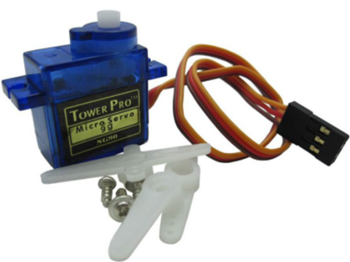
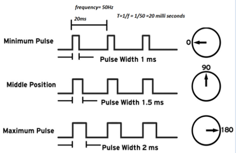
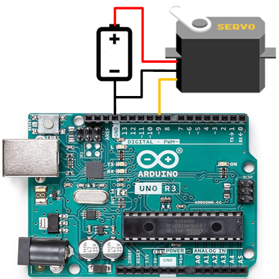
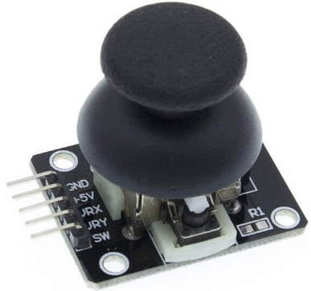
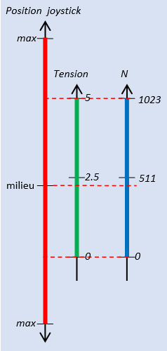
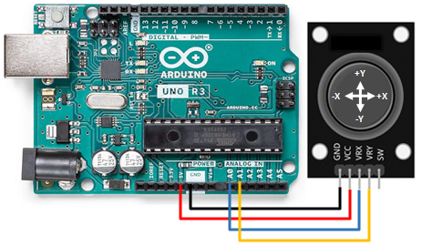
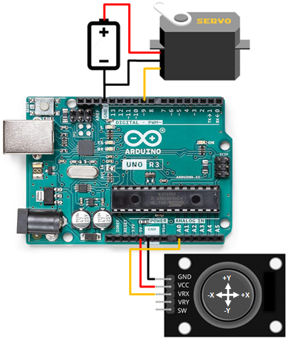
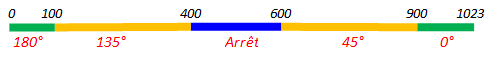

Servomoteur
Servo Moteur
Un Servomoteur est un moteur CC auquel on a ajouté un peu d'électronique et un peu de mécanique pour en faire un positionneur angulaire

Le contrôle de position se fait à l'aide d'un signal PWM
Le branchement avec l'Arduino est très simple, une seule sortie PWM suffit. L'alimentation doit être choisie en fonction des spécifications du moteur
La librairie Servo
La librairie Servo fait partie du package Arduino-IDE. Elle propose quelques fonctions permettant de contrôler facilement un Servomoteur
- attach(pin, [min, max]);
- Initialise la librairie et Définit la broche Arduino connectée au servomoteur
- pin : Broche Arduino qui contrôle le Servomoteur
- [min, max] : Ces deux paramètres sont optionnels. Ils définissent (en μs) la largeur d'impulsion minimale (pour 0°) et maximale (pour 180°), Par défaut [544, 2400]
- A l'exécution de cette fonction, le servo est envoyé à la position 90°
- write(A);
- Positionner le Servo en précisant un angle
- A : Nouvelle position en °, doit être compris entre 0 et 180
- Si A > 180, la fonction envoie 180
- Si A < 0, la fonction envoie 0
- writeMicroseconds(U);
- Positionner le Servo en précisant une largeur d'impulsion,
- U : Largeur de l'impulsion en µs,
- U doit être dans l'intervalle [min, max] définit par la fonction attach()
- Si A > max, la fonction envoie max, le Servo va à 180°
- Si A < min, la fonction envoie min, le Servo va à 0°
- read();
- retourne la position actuelle (en °) du Servo
- detach();
- Libère la broche préalablement attachée par attach()
Exemple Basique
Dans cet exemple, on envoie successivement le Servo aux positions 0°, 45°, 90°, 135°, 180°
/*
Test simple d'un servomoteur
*/
#include <Servo.h>
Servo myServo;
void setup() {
myServo.attach(9);
}
void loop() {
myServo.write(0);
delay(2000);
myServo.write(45);
delay(2000);
myServo.write(90);
delay(2000);
myServo.write(135);
delay(2000);
myServo.write(180);
delay(2000);
}
Exemple: Limites du Servo
- Quand on se procure un Servomoteur, on ne connaît pas avec précision la largeur min
de l'impulsion PWW qui le positionne à 0° et la largeur max qui le
positionne à 180 °,
- Certains Servomoteur sont calibrés à [1000µs , 2000µs]
- D'autres sont calibrés à [540µs , 2400µs]
- D'autres on des intervalles différents
- En plus, la plupart des Servomoteurs ne vont pas jusqu'à 180°. La position correspondant à l'impulsion max est souvent inférieure à 180°
- Le programme ci-dessous permet de spécifier la largeur de l'impulsion (en µs) et d'observer la
position du Servomoteur,
- On commence par une valeur < 544 µs ==> Le Servo se positionne sur 0 °
- On augmente petit à petit jusqu'a ce que le Servo bouge, on note la valeur min
- On envoie une valeur > 2400 µs ==> Le Servo se positionne sur son angle max qui est probablement légèrement inférieur à 180 °
- On diminue petit à petit jusqu'a ce que le Servo bouge, on note la valeur max
- Maintenant, on a le bon intervalle [min, max] de notre Servo, il faudra le préciser dans la fonction attach() des programmes à venir
#include <Servo.h>
Servo myServo;
void setup() {
myServo.attach(9);
Serial.begin(9600);
Serial.setTimeout(5000); //Timeout pou Serial.parseInt()
Serial.println("Entrer un nombre dans l'intervalle [540 , 2450]");
Serial.println("Valider par Retour Ligne (CR, LF ou les deux)");
Serial.print("OK> ");
}
void loop() {
if (Serial.available()){
int T = Serial.parseInt();
clearInputBuffer();
myServo.writeMicroseconds(T);
Serial.print("OK> ");
}
}
void clearInputBuffer() {
do {
delay(2);
Serial.read();
} while (Serial.available());
}
Exemple : Commande par un Joystick
Dans cet exemple, on va controller un Servomoteur à l'aide d'un Joystick
- Le joystick est constitué de deux potentiomètres Px et Py,
- Quand on bouge le joystick dans l'axe X, il fait tourner le potentiomètre Px
- Quand on bouge le joystick dans l'axe Y, il fait tourner le potentiomètre Py
- Si on branche le potentiomètre entre la masse et 5Volts, les deux tensions de sorties VRX et VRY (points milieux) vont varier entre 0 Volts et 5 Volts
- Si on applique une sortie (VRX ou VRY) à une entrée analogique du Arduino et on lit sa valeur avec la fonction analogRead() on obtient une valeurs comprise entre 0 et 1023 
- Les premiers tests montrent que le joystick n'est pas parfait:
- Il n'est pas centré, à la position médiane, il ne délivre pas 2.5V,
- Les limites 0v d'un coté et 5V de l'autre sont atteintes bien avant que la position du joystick ne soit arrivée au maximum,
- Il semble que la tension obtenue sur la sortie du joystick (VRX ou VRY) ne varie pas linéairement avec les déplacements du potentiomètre: Un déplacement ΔP du joystick ne produit pas toujours la même variation de tension ΔV,
- Il faudra donc adapter les programmes à ces considérations.
- Pour notre exemple, positionner le Servo de sorte à ce que le 0° soit à droite et le 180° soit à gauche
- Pour le joystick, on utilise l'axe des X. On connecte VRX à l'entrée A0 de l’Arduino. Positionner le joystick de sorte à avoir le connecteur vers la gauche. Ainsi quand on pousse à droite la valeur de N correspondant à VRX augmente vers 1023. Quand on pousse à gauche, la valeur de N diminue vers 0
- on va faire simple. En plus d'une plage médiane, on va partager l'excursion
de chaque coté en deux plages (1ère plage et 2ème plage):
- Quand le joystick est au repos (position médiane), la valeur lue sur Arduino est voisine de 500, on est dans la plage médiane => Servo sur Position 90°
- Quand on pousse un peu le Joystick vers la droite, on arrive dans 1ère plage droite, nous allons l'affecter à Position 45°
- Quand on pousse le Joystick plus loin à droite, on arrive dans la 2ère plage droite, nous allons l'affecter à Position 0°
- Si à partir de la position médiane, on pousse un peu le Joystick vers la gauche, on arrive dans 1ère plage gauche, nous allons l'affecter à Position 135°
- Quand on pousse le Joystick plus loin à gauche, on arrive dans la 2ère plage gauche, nous allons l'affecter à Position 180°
- On peut par exemple essayer les plages suivantes et les adapter ensuite après utilisation
[0 → 100] ==> Position 180° [100 → 400] ==> Position 135° [400 → 600] ==> Position 90° [600 → 900] ==> Position 45° [900 → 1023] ==> Position 0°
Petit programme pour tester le Joystick

Le petit programme ci dessous permet de tester le Joystick, repérer les axes X et Y et afficher les valeurs fournies par la fonction analogRead() selon la position du Joystick.
void setup() {
Serial.begin(9600);
}
void loop() {
int Nx = analogRead(A0);
int Ny = analogRead(A1);
Serial.print("Nx ----> ");
Serial.print(Nx);
Serial.print(" Ny ----> ");
Serial.println(Ny);
delay(1000);
}
Contrôler le Servo par le Joystick


/*
0 100 400 600 900 1023
|-180°-|-------135°-------|----90°----|--------45°-------|--0°--|
Servo contrôlé par la broche 9
Joystick sur A0
*/
#define SERVOPIN 9
#define N1 100 // modifier les paliers si nécessaire
#define N2 400
#define N3 600
#define N4 900
#include ;
Servo myServo;
void setup() {
myServo.attach(SERVOPIN);
}
void loop() {
int N = analogRead(A0);
if (N < N1) myServo.write(180);
else if (N < N2) myServo.write(135);
else if (N < N3) myServo.write(90);
else if (N < N4) myServo.write(45);
else myServo.write(0);
delay(100);
}